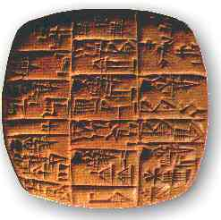
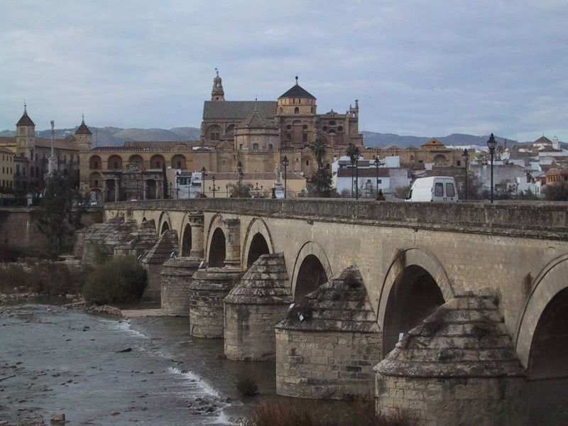
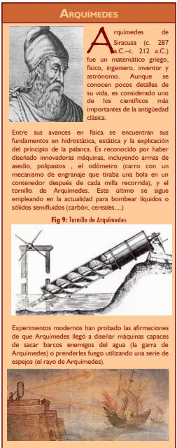

Tecnología y Sociedad 4º E.S.O.
5. La Edad Antigua.
La característica principal de este periodo es la aparición de las grandes civilizaciones, destacando entre otras: Egipto, Sumeria, Asiria, Babilonia, China, India, Grecia y el Imperio Romano.
Dentro de la Edad Antigua, podemos situar la Edad de Bronce (3000-1000 a.C.) y la Edad de Hierro (en Europa desde aproximadamente el 1000 a.C hasta el 100 d.C.). Encontramos los siguientes hitos tecnológicos:
- Escritura cuneiforme: apareció en Mesopotamia (alrededor del 3500 a.C.) fruto de la necesidad de registrar las transacciones comerciales y los pagos de impuestos por parte de la civilización sumeria. La solución dada, fue el empleo de una caña en forma de cuña para escribir sobre tablillas de arcilla blanda que al secarse dejaba constancia de lo escrito. En torno al 3000 a.C. aparece la escritura jeroglífica en Egipto.
- Rueda: surgida alrededor del 3500 a.C. en Mesopotamia, en el torno de un alfarero. Se trataba de un modesto disco de arcilla perforado en el centro. Las primeras ruedas eran discos macizos. Hacia el 2000 a.C. aparecieron en Mesopotamia los primeros carros de 2 y 4 ruedas, donde la forma maciza se substituyó por los radios, disminuyendo enormemente su peso. La rueda supuso una gran ventaja militar en su tiempo, y hoy en día está incorporada en múltiples mecanismos y máquinas.
- Metalurgia del bronce: Desde el 5000 a.C. se conocía que el martilleo endurecía el cobre, y permitía elaborar utensilios afilados. Alrededor del año 3000, en Mesopotamia, se descubrió que la aleación del cobre con el estaño daba lugar a un material, llamado bronce, mucho más duro que cada uno de sus componentes por separado. El empleo de dicha aleación originó nuevos oficios (minería, orfebrería), revolucionando las técnicas artesanales, el arte de la guerra, (nuevas armas), las tareas agrícolas, la joyería...
- Domesticación del caballo: lograda alrededor del 3000 a.C. en las estepas del sur de Eurasia. La ampliación del radio de acción y de la capacidad de transporte, así como su eficacia como arma de guerra produjeron enormes modificaciones sociales en las culturas que incorporaron el caballo, produciendo la transición desde el pastoreo a la vida guerrera.
- Vidrio: El vidrio se descubrió hacia el 3000 a.C; en Egipto, al formarse casualmente durante el proceso de fundición de metales en sus hornos. Para obtener el vidrio, se fundía una mezcla de arena cal y sosa a una temperatura de 1200-1600 ºC en un crisol de arcilla. El bloque de vidrio, una vez frío, se separa del crisol. Para darle forma, se calentaba de nuevo y se enrollaba sobre una base.
- Arado: el arado tradicional de madera, desarrollado hacia el 4000 a.C. fue perfeccionado en la Edad de Bronce. Su desarrollo permitió el uso de la fuerza animal (en lugar de la humana) en las labores agrícolas y así, aumentar la producción.
- Metalurgia del hierro: Su primera obtención por fusión de minerales se realizó en torno al año 2300 a.C. en India, Mesopotamia y Asia Menor. La metalurgia relacionada con dicho metal avanzó más lentamente, ya que el hierro necesitaba mayores temperaturas para fundirse, siendo más difícil su moldeo. Los primeros objetos fabricados con él fueron útiles de labranza y adorno, incorporándose posteriormente a la fabricación de armas. La aparición de la espada de hierro produjo un desequilibrio militar destacable. Hacia 1350 a.C. ya se conocía la técnica de la soldadura para unir dos trozos de metal.
- Moneda (700 a.C.): aparece en Lidia (Oriente medio). Hasta entonces, para el intercambio de mercancías se empleaban productos tales como la sal o piezas variadas de metales preciosos.
- Desarrollo de la Mecánica y de la Arquitectura: El periodo entre el s. IV a.C y el año 476 d.C se caracterizó por el auge de las máquinas y la arquitectura, destacando las catapultas, fundíbulos, ruedas dentadas, la manivela, poleas, el torno elevador, el tornillo hidráulico de Arquímedes, los acueductos, las calzadas, la cúpula, instalaciones de saneamiento y calefacción en viviendas, baños públicos, puentes, grúas, molinos hidráulicos, circos....
- Otros: papiro, navegación a vela, astrolabio (instrumento utilizado para medir la posición de los cuerpos celestes), ábaco (primera máquina de cálculo, surgida en Sumeria), máquinas con engranajes, aprovechamiento de la fuerza energía hidráulica, eólica... En China se desarrollan objetos tecnológicos (la brújula, el papel, la porcelana...que aún tardarían cientos de años en desarrollarse o llegar a Europa
RELACIÓN TECNOLOGÍA-SOCIEDAD. SOCIEDADES AGRÍCOLAS Y URBANAS
- Centralización: las antiguas aldeas, al ir creciendo, se convirtieron en grandes ciudades. Las rutas comerciales facilitaron a ciertos pueblos el acceso de nuevos recursos y nuevas tecnologías (sobre todo relacionadas con la guerra).
- Grandes Imperios: la expansión militar de ciertos grupos dio lugar a la formación de grandes imperios (por ejemplo, los etruscos dieron lugar a Roma, y ésta al Imperio Romano). Los conquistadores, asimilaron las tecnologías de los pueblos vencidos.
- Estratificación social: En las ciudades aparecieron estructuras políticas complejas (diversidad de estamentos) y una fuerte especialización del trabajo que incrementó las desigualdades sociales, acentuadas a su vez con la aparición de la propiedad privada. Por poner un ejemplo, en Roma apareció la categoría de ciudadanos, divididos en patricios (clase dominante) y plebeyos. En un nivel inferior se encontraban los esclavos, procedentes de los pueblos sometidos y empleados, en su mayoría, en la construcción de las grandes obras públicas: edificios, monumentos, calzadas.... La mayoría de los sabios griegos y persas estaban de acuerdo en que en las sociedades donde se utilizaba la esclavitud los problemas de la productividad se resolvían por el incremento del número de trabajadores, antes que por los métodos nuevos de producción o nuevas fuentes energéticas.
Obra publicada con Licencia Creative Commons Reconocimiento No comercial Compartir igual 4.0